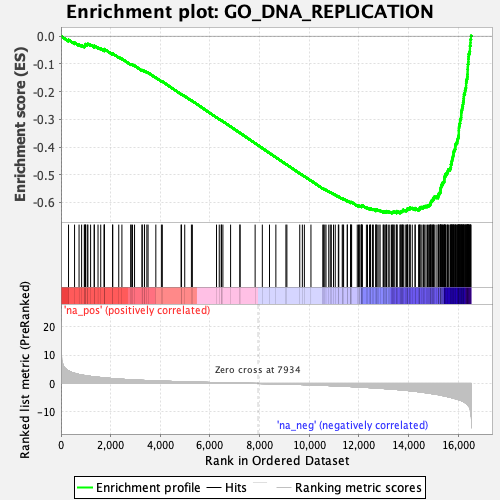

| | | Dataset | DE_genes2 |
| Phenotype | NoPhenotypeAvailable |
| Upregulated in class | na_neg |
| GeneSet | GO_DNA_REPLICATION |
| Enrichment Score (ES) | -0.63869 |
| Normalized Enrichment Score (NES) | -2.1520417 |
| Nominal p-value | 0.0 |
| FDR q-value | 0.0 |
| FWER p-Value | 0.0 |
Table: GSEA Results Summary

Fig 1: Enrichment plot: GO_DNA_REPLICATION
Profile of the Running ES Score & Positions of GeneSet Members on the Rank Ordered List
| PROBE | GENE SYMBOL | GENE_TITLE | RANK IN GENE LIST | RANK METRIC SCORE | RUNNING ES | CORE ENRICHMENT | | 1 | TNFAIP1 | | | 303 | 4.425 | -0.0131 | No |
| 2 | POLL | | | 546 | 3.585 | -0.0235 | No |
| 3 | CHTF8 | | | 727 | 3.153 | -0.0306 | No |
| 4 | ATG7 | | | 830 | 2.990 | -0.0331 | No |
| 5 | RAC1 | | | 938 | 2.812 | -0.0362 | No |
| 6 | CDC42 | | | 954 | 2.787 | -0.0336 | No |
| 7 | KAT5 | | | 984 | 2.753 | -0.0320 | No |
| 8 | SMARCAL1 | | | 986 | 2.753 | -0.0286 | No |
| 9 | CDK9 | | | 1055 | 2.659 | -0.0294 | No |
| 10 | S100A11 | | | 1083 | 2.619 | -0.0278 | No |
| 11 | PNKP | | | 1192 | 2.475 | -0.0314 | No |
| 12 | KCTD13 | | | 1339 | 2.325 | -0.0374 | No |
| 13 | POLD4 | | | 1340 | 2.323 | -0.0345 | No |
| 14 | POLG | | | 1491 | 2.182 | -0.0410 | No |
| 15 | PPP2R1A | | | 1600 | 2.090 | -0.0451 | No |
| 16 | RECQL5 | | | 1740 | 1.959 | -0.0511 | No |
| 17 | CDK2AP1 | | | 1742 | 1.957 | -0.0488 | No |
| 18 | WIZ | | | 1748 | 1.952 | -0.0466 | No |
| 19 | ZNF365 | | | 2075 | 1.700 | -0.0645 | No |
| 20 | RAD9A | | | 2085 | 1.693 | -0.0630 | No |
| 21 | SAMHD1 | | | 2326 | 1.545 | -0.0758 | No |
| 22 | IGHMBP2 | | | 2453 | 1.464 | -0.0817 | No |
| 23 | UPF1 | | | 2807 | 1.281 | -0.1018 | No |
| 24 | CDAN1 | | | 2829 | 1.274 | -0.1015 | No |
| 25 | EXD2 | | | 2881 | 1.252 | -0.1030 | No |
| 26 | TREX1 | | | 2962 | 1.212 | -0.1064 | No |
| 27 | CDC34 | | | 3263 | 1.088 | -0.1235 | No |
| 28 | MCIDAS | | | 3270 | 1.085 | -0.1225 | No |
| 29 | DDX11 | | | 3360 | 1.054 | -0.1267 | No |
| 30 | RTEL1 | | | 3364 | 1.052 | -0.1255 | No |
| 31 | JUN | | | 3458 | 1.018 | -0.1300 | No |
| 32 | POLB | | | 3506 | 1.003 | -0.1316 | No |
| 33 | ING4 | | | 3819 | 0.889 | -0.1497 | No |
| 34 | GMNC | | | 4043 | 0.825 | -0.1623 | No |
| 35 | E4F1 | | | 4080 | 0.813 | -0.1635 | No |
| 36 | NPM2 | | | 4835 | 0.609 | -0.2091 | No |
| 37 | NFIC | | | 4854 | 0.604 | -0.2094 | No |
| 38 | LRWD1 | | | 4983 | 0.574 | -0.2166 | No |
| 39 | EME2 | | | 5252 | 0.504 | -0.2324 | No |
| 40 | BCL6 | | | 5290 | 0.494 | -0.2340 | No |
| 41 | WDR18 | | | 6263 | 0.292 | -0.2934 | No |
| 42 | NFIX | | | 6373 | 0.270 | -0.2997 | No |
| 43 | TP53 | | | 6453 | 0.253 | -0.3042 | No |
| 44 | SETMAR | | | 6461 | 0.252 | -0.3044 | No |
| 45 | ID3 | | | 6520 | 0.240 | -0.3076 | No |
| 46 | CTC1 | | | 6830 | 0.180 | -0.3264 | No |
| 47 | WRNIP1 | | | 7205 | 0.115 | -0.3492 | No |
| 48 | SLX4 | | | 7210 | 0.114 | -0.3493 | No |
| 49 | DACH1 | | | 7818 | 0.014 | -0.3866 | No |
| 50 | RPA2 | | | 8108 | -0.028 | -0.4043 | No |
| 51 | RAD9B | | | 8397 | -0.076 | -0.4219 | No |
| 52 | POLH | | | 8653 | -0.120 | -0.4374 | No |
| 53 | SIN3A | | | 9058 | -0.205 | -0.4619 | No |
| 54 | ZPR1 | | | 9097 | -0.214 | -0.4640 | No |
| 55 | POLA2 | | | 9615 | -0.343 | -0.4953 | No |
| 56 | TOP3A | | | 9720 | -0.375 | -0.5012 | No |
| 57 | GINS3 | | | 9801 | -0.401 | -0.5056 | No |
| 58 | GRWD1 | | | 10066 | -0.478 | -0.5213 | No |
| 59 | REPIN1 | | | 10543 | -0.641 | -0.5497 | No |
| 60 | REV1 | | | 10577 | -0.653 | -0.5509 | No |
| 61 | CINP | | | 10623 | -0.670 | -0.5528 | No |
| 62 | LIG3 | | | 10672 | -0.684 | -0.5549 | No |
| 63 | ATRIP | | | 10783 | -0.719 | -0.5608 | No |
| 64 | POLE4 | | | 10843 | -0.740 | -0.5635 | No |
| 65 | CDK2 | | | 10886 | -0.760 | -0.5651 | No |
| 66 | TERF2 | | | 10975 | -0.790 | -0.5695 | No |
| 67 | RHNO1 | | | 11045 | -0.821 | -0.5727 | No |
| 68 | RAD1 | | | 11169 | -0.868 | -0.5792 | No |
| 69 | ZMPSTE24 | | | 11187 | -0.876 | -0.5792 | No |
| 70 | POLE3 | | | 11326 | -0.937 | -0.5865 | No |
| 71 | FAF1 | | | 11354 | -0.950 | -0.5869 | No |
| 72 | KAT7 | | | 11381 | -0.961 | -0.5873 | No |
| 73 | PTMS | | | 11529 | -1.016 | -0.5951 | No |
| 74 | SLFN11 | | | 11532 | -1.020 | -0.5939 | No |
| 75 | TSPYL2 | | | 11663 | -1.072 | -0.6006 | No |
| 76 | ANKRD17 | | | 11670 | -1.076 | -0.5996 | No |
| 77 | DHX9 | | | 11678 | -1.078 | -0.5987 | No |
| 78 | SENP2 | | | 11704 | -1.087 | -0.5989 | No |
| 79 | MCMDC2 | | | 11931 | -1.189 | -0.6113 | No |
| 80 | TONSL | | | 11980 | -1.209 | -0.6127 | No |
| 81 | STOML2 | | | 12008 | -1.225 | -0.6128 | No |
| 82 | POLD2 | | | 12038 | -1.238 | -0.6131 | No |
| 83 | LIG1 | | | 12096 | -1.272 | -0.6150 | No |
| 84 | PPP2CA | | | 12098 | -1.272 | -0.6134 | No |
| 85 | HMGA1 | | | 12102 | -1.273 | -0.6120 | No |
| 86 | GLI2 | | | 12129 | -1.288 | -0.6120 | No |
| 87 | TBRG1 | | | 12133 | -1.293 | -0.6106 | No |
| 88 | HUS1 | | | 12299 | -1.374 | -0.6190 | No |
| 89 | RPA3 | | | 12343 | -1.397 | -0.6199 | No |
| 90 | HELB | | | 12425 | -1.437 | -0.6231 | No |
| 91 | SSBP1 | | | 12461 | -1.455 | -0.6234 | No |
| 92 | RBBP8 | | | 12469 | -1.463 | -0.6220 | No |
| 93 | RFWD3 | | | 12547 | -1.504 | -0.6249 | No |
| 94 | RFC2 | | | 12578 | -1.523 | -0.6248 | No |
| 95 | PRIM2 | | | 12678 | -1.578 | -0.6289 | No |
| 96 | E2F8 | | | 12689 | -1.584 | -0.6276 | No |
| 97 | CCNE1 | | | 12690 | -1.585 | -0.6256 | No |
| 98 | CHAF1B | | | 12733 | -1.605 | -0.6262 | No |
| 99 | GLI1 | | | 12802 | -1.649 | -0.6283 | No |
| 100 | SDE2 | | | 12851 | -1.688 | -0.6291 | No |
| 101 | POLD3 | | | 12975 | -1.753 | -0.6345 | No |
| 102 | DTD1 | | | 12984 | -1.756 | -0.6328 | No |
| 103 | RRM1 | | | 13038 | -1.791 | -0.6338 | No |
| 104 | RBBP4 | | | 13080 | -1.817 | -0.6341 | No |
| 105 | RPA1 | | | 13109 | -1.830 | -0.6335 | No |
| 106 | POLD1 | | | 13115 | -1.833 | -0.6315 | No |
| 107 | RNASEH2A | | | 13180 | -1.879 | -0.6331 | No |
| 108 | UCN | | | 13241 | -1.918 | -0.6344 | No |
| 109 | ING5 | | | 13312 | -1.963 | -0.6362 | Yes |
| 110 | DNAJA3 | | | 13345 | -1.985 | -0.6357 | Yes |
| 111 | CHTF18 | | | 13370 | -2.009 | -0.6347 | Yes |
| 112 | CDT1 | | | 13400 | -2.026 | -0.6339 | Yes |
| 113 | RPAIN | | | 13443 | -2.059 | -0.6340 | Yes |
| 114 | TIMELESS | | | 13518 | -2.107 | -0.6359 | Yes |
| 115 | RBMS1 | | | 13526 | -2.115 | -0.6337 | Yes |
| 116 | EGFR | | | 13534 | -2.119 | -0.6314 | Yes |
| 117 | ALYREF | | | 13653 | -2.199 | -0.6359 | Yes |
| 118 | DBF4B | | | 13663 | -2.209 | -0.6337 | Yes |
| 119 | MAP2K4 | | | 13700 | -2.242 | -0.6332 | Yes |
| 120 | POLN | | | 13727 | -2.262 | -0.6319 | Yes |
| 121 | MCMBP | | | 13751 | -2.284 | -0.6305 | Yes |
| 122 | E2F7 | | | 13768 | -2.300 | -0.6286 | Yes |
| 123 | MCM3 | | | 13783 | -2.315 | -0.6266 | Yes |
| 124 | MCM5 | | | 13861 | -2.378 | -0.6283 | Yes |
| 125 | FEN1 | | | 13911 | -2.426 | -0.6283 | Yes |
| 126 | SSRP1 | | | 13940 | -2.448 | -0.6270 | Yes |
| 127 | MCM7 | | | 13952 | -2.457 | -0.6246 | Yes |
| 128 | RFC5 | | | 13956 | -2.460 | -0.6217 | Yes |
| 129 | HRAS | | | 14020 | -2.508 | -0.6224 | Yes |
| 130 | RBBP7 | | | 14053 | -2.553 | -0.6212 | Yes |
| 131 | RECQL4 | | | 14062 | -2.561 | -0.6185 | Yes |
| 132 | EHMT2 | | | 14147 | -2.640 | -0.6204 | Yes |
| 133 | FGFR1 | | | 14259 | -2.748 | -0.6238 | Yes |
| 134 | TOP1MT | | | 14265 | -2.752 | -0.6206 | Yes |
| 135 | ORC5 | | | 14402 | -2.879 | -0.6254 | Yes |
| 136 | DUT | | | 14433 | -2.919 | -0.6236 | Yes |
| 137 | LIG4 | | | 14451 | -2.938 | -0.6210 | Yes |
| 138 | POLE | | | 14456 | -2.944 | -0.6175 | Yes |
| 139 | GTPBP4 | | | 14505 | -2.989 | -0.6168 | Yes |
| 140 | CHAF1A | | | 14579 | -3.085 | -0.6174 | Yes |
| 141 | NFIA | | | 14602 | -3.112 | -0.6148 | Yes |
| 142 | MGME1 | | | 14648 | -3.182 | -0.6136 | Yes |
| 143 | NT5M | | | 14702 | -3.246 | -0.6128 | Yes |
| 144 | ESCO1 | | | 14761 | -3.316 | -0.6123 | Yes |
| 145 | SET | | | 14793 | -3.350 | -0.6100 | Yes |
| 146 | NAP1L1 | | | 14844 | -3.416 | -0.6088 | Yes |
| 147 | KIN | | | 14869 | -3.449 | -0.6060 | Yes |
| 148 | CACYBP | | | 14884 | -3.479 | -0.6025 | Yes |
| 149 | PCNA | | | 14896 | -3.501 | -0.5988 | Yes |
| 150 | MCM4 | | | 14906 | -3.510 | -0.5950 | Yes |
| 151 | SUPT16H | | | 14949 | -3.572 | -0.5931 | Yes |
| 152 | ORC3 | | | 14965 | -3.594 | -0.5895 | Yes |
| 153 | RRM2B | | | 15001 | -3.653 | -0.5871 | Yes |
| 154 | MCM2 | | | 15006 | -3.658 | -0.5828 | Yes |
| 155 | GMNN | | | 15032 | -3.688 | -0.5797 | Yes |
| 156 | DONSON | | | 15105 | -3.791 | -0.5794 | Yes |
| 157 | ETAA1 | | | 15187 | -3.901 | -0.5795 | Yes |
| 158 | ZNF830 | | | 15192 | -3.908 | -0.5749 | Yes |
| 159 | POLA1 | | | 15213 | -3.936 | -0.5712 | Yes |
| 160 | ATM | | | 15219 | -3.945 | -0.5666 | Yes |
| 161 | MSH3 | | | 15265 | -4.049 | -0.5643 | Yes |
| 162 | FAM111A | | | 15280 | -4.085 | -0.5601 | Yes |
| 163 | RAD51 | | | 15283 | -4.088 | -0.5551 | Yes |
| 164 | RAD17 | | | 15291 | -4.101 | -0.5504 | Yes |
| 165 | MCM8 | | | 15299 | -4.112 | -0.5457 | Yes |
| 166 | CHEK2 | | | 15311 | -4.128 | -0.5412 | Yes |
| 167 | ORC4 | | | 15318 | -4.149 | -0.5364 | Yes |
| 168 | BARD1 | | | 15360 | -4.219 | -0.5336 | Yes |
| 169 | BOD1L1 | | | 15365 | -4.231 | -0.5286 | Yes |
| 170 | POLE2 | | | 15406 | -4.310 | -0.5257 | Yes |
| 171 | POLI | | | 15433 | -4.361 | -0.5218 | Yes |
| 172 | DNA2 | | | 15436 | -4.365 | -0.5165 | Yes |
| 173 | RMI2 | | | 15440 | -4.370 | -0.5112 | Yes |
| 174 | ATR | | | 15446 | -4.382 | -0.5061 | Yes |
| 175 | GEN1 | | | 15480 | -4.447 | -0.5026 | Yes |
| 176 | INO80 | | | 15484 | -4.450 | -0.4972 | Yes |
| 177 | NUCKS1 | | | 15540 | -4.573 | -0.4949 | Yes |
| 178 | GINS1 | | | 15564 | -4.619 | -0.4905 | Yes |
| 179 | ZBTB38 | | | 15580 | -4.658 | -0.4856 | Yes |
| 180 | ATRX | | | 15599 | -4.719 | -0.4808 | Yes |
| 181 | EME1 | | | 15663 | -4.840 | -0.4787 | Yes |
| 182 | GINS4 | | | 15688 | -4.879 | -0.4740 | Yes |
| 183 | RRM2 | | | 15702 | -4.911 | -0.4687 | Yes |
| 184 | TTF1 | | | 15703 | -4.912 | -0.4626 | Yes |
| 185 | BLM | | | 15728 | -4.957 | -0.4579 | Yes |
| 186 | RBBP6 | | | 15734 | -4.971 | -0.4520 | Yes |
| 187 | BAZ1A | | | 15747 | -5.005 | -0.4465 | Yes |
| 188 | POLG2 | | | 15760 | -5.033 | -0.4409 | Yes |
| 189 | ORC1 | | | 15778 | -5.075 | -0.4356 | Yes |
| 190 | NASP | | | 15792 | -5.106 | -0.4300 | Yes |
| 191 | RFC4 | | | 15807 | -5.149 | -0.4245 | Yes |
| 192 | CDK1 | | | 15810 | -5.156 | -0.4182 | Yes |
| 193 | MCM6 | | | 15829 | -5.218 | -0.4128 | Yes |
| 194 | PRIM1 | | | 15856 | -5.276 | -0.4078 | Yes |
| 195 | TOPBP1 | | | 15880 | -5.334 | -0.4025 | Yes |
| 196 | TOP1 | | | 15882 | -5.336 | -0.3959 | Yes |
| 197 | PDS5A | | | 15889 | -5.372 | -0.3896 | Yes |
| 198 | ORC6 | | | 15923 | -5.453 | -0.3848 | Yes |
| 199 | ATF1 | | | 15954 | -5.524 | -0.3798 | Yes |
| 200 | CHEK1 | | | 15965 | -5.552 | -0.3734 | Yes |
| 201 | FANCM | | | 15986 | -5.624 | -0.3676 | Yes |
| 202 | DBF4 | | | 16002 | -5.664 | -0.3615 | Yes |
| 203 | PIF1 | | | 16018 | -5.727 | -0.3553 | Yes |
| 204 | RFC3 | | | 16020 | -5.728 | -0.3482 | Yes |
| 205 | NBN | | | 16021 | -5.731 | -0.3410 | Yes |
| 206 | TERF1 | | | 16025 | -5.742 | -0.3340 | Yes |
| 207 | RFC1 | | | 16030 | -5.761 | -0.3271 | Yes |
| 208 | TICRR | | | 16041 | -5.802 | -0.3205 | Yes |
| 209 | ORC2 | | | 16058 | -5.843 | -0.3142 | Yes |
| 210 | WRN | | | 16074 | -5.884 | -0.3077 | Yes |
| 211 | PURA | | | 16076 | -5.891 | -0.3004 | Yes |
| 212 | THOC1 | | | 16107 | -5.970 | -0.2948 | Yes |
| 213 | CCNE2 | | | 16115 | -5.986 | -0.2878 | Yes |
| 214 | RECQL | | | 16118 | -5.999 | -0.2804 | Yes |
| 215 | CDC7 | | | 16121 | -6.016 | -0.2730 | Yes |
| 216 | TIPIN | | | 16138 | -6.072 | -0.2665 | Yes |
| 217 | POLK | | | 16154 | -6.141 | -0.2597 | Yes |
| 218 | FBXO5 | | | 16169 | -6.210 | -0.2528 | Yes |
| 219 | MMS22L | | | 16185 | -6.275 | -0.2459 | Yes |
| 220 | PRIMPOL | | | 16194 | -6.304 | -0.2385 | Yes |
| 221 | GINS2 | | | 16213 | -6.392 | -0.2317 | Yes |
| 222 | USP37 | | | 16219 | -6.429 | -0.2239 | Yes |
| 223 | EREG | | | 16225 | -6.454 | -0.2162 | Yes |
| 224 | DTL | | | 16230 | -6.481 | -0.2083 | Yes |
| 225 | ZRANB3 | | | 16266 | -6.660 | -0.2022 | Yes |
| 226 | CDC45 | | | 16272 | -6.693 | -0.1941 | Yes |
| 227 | REV3L | | | 16297 | -6.852 | -0.1871 | Yes |
| 228 | ATAD5 | | | 16312 | -6.915 | -0.1793 | Yes |
| 229 | CCDC88A | | | 16315 | -6.955 | -0.1707 | Yes |
| 230 | NFIB | | | 16319 | -6.978 | -0.1622 | Yes |
| 231 | ESCO2 | | | 16342 | -7.133 | -0.1547 | Yes |
| 232 | DSCC1 | | | 16359 | -7.253 | -0.1466 | Yes |
| 233 | BRIP1 | | | 16369 | -7.368 | -0.1379 | Yes |
| 234 | CDC6 | | | 16375 | -7.439 | -0.1290 | Yes |
| 235 | CCNA2 | | | 16376 | -7.439 | -0.1197 | Yes |
| 236 | CLSPN | | | 16384 | -7.528 | -0.1107 | Yes |
| 237 | EXO1 | | | 16387 | -7.570 | -0.1014 | Yes |
| 238 | RAD50 | | | 16404 | -7.792 | -0.0926 | Yes |
| 239 | RMI1 | | | 16408 | -7.835 | -0.0830 | Yes |
| 240 | BRCA1 | | | 16413 | -7.892 | -0.0734 | Yes |
| 241 | DNAJC2 | | | 16422 | -7.989 | -0.0640 | Yes |
| 242 | SMC3 | | | 16453 | -8.381 | -0.0553 | Yes |
| 243 | WDHD1 | | | 16469 | -8.658 | -0.0455 | Yes |
| 244 | MCM10 | | | 16471 | -8.676 | -0.0347 | Yes |
| 245 | POLQ | | | 16490 | -9.648 | -0.0238 | Yes |
| 246 | BRCA2 | | | 16493 | -9.707 | -0.0118 | Yes |
| 247 | MCM9 | | | 16513 | -11.241 | 0.0011 | Yes |
Table: GSEA details [plain text format]
Fig 2: GO_DNA_REPLICATION: Random ES distribution
Gene set null distribution of ES for GO_DNA_REPLICATION